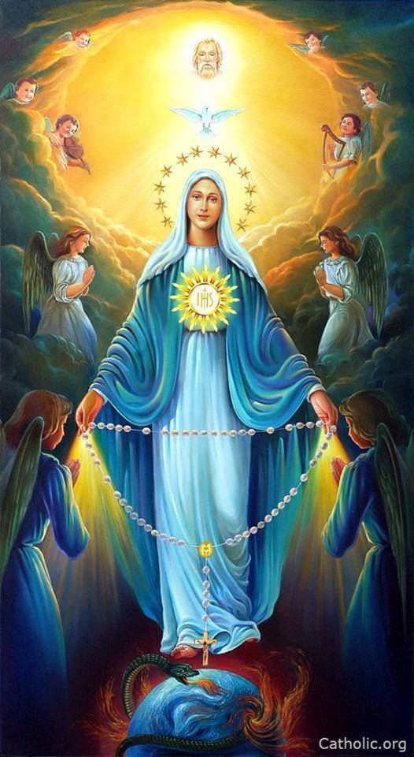

Prayer for the Intercession of Our Lady Queen of the Holy Rosary

Queen of the Holy Rosary, be gracious to baby Grace, restore her to health.
We beg you to run to Jesus and ask him to move heaven and earth to bring about this intention.
We know that her life is in His hands, that He is forming her at this very moment,
and when two or more are gathered, that He hears our cry and petition.
We ask for the protection of body and soul for Katelyn and Stephen through this trying time,
and for Katelyn to have a safe delivery.
His kingdom come, His will be done.
Amen.
54 day rosary novena
Return to Home page